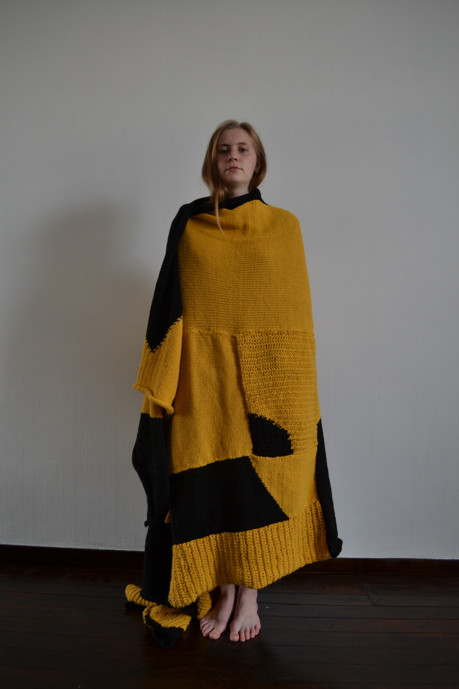
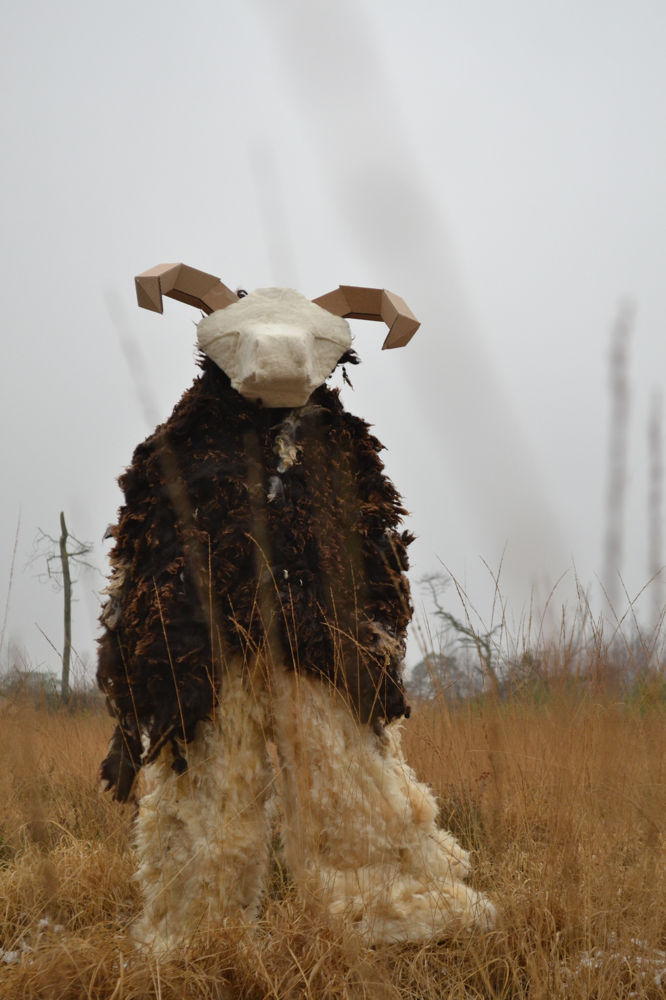
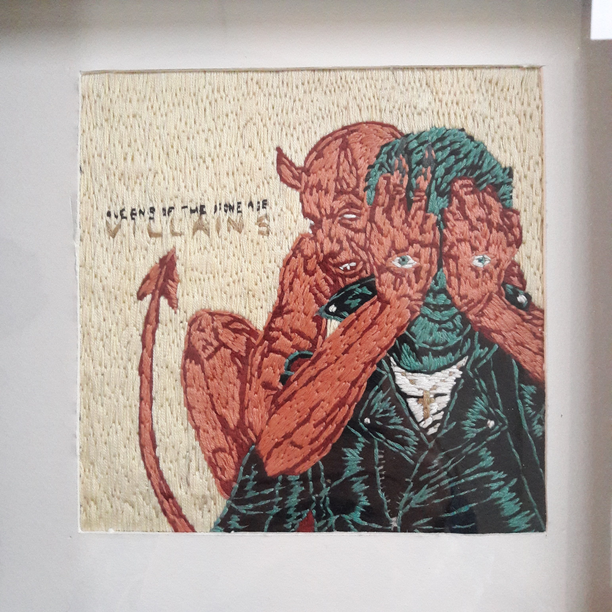

PORTFOLIO
20/02/2018
Persoonlijk deken
Vertrekkende van een abstracte tekening als opstapeling van persoonlijke gebeurtenissen ging ik de tekening deconstrueren en terug in elkaar puzzelen. Dit om al de gebeurtenissen te behouden maar op een andere manier te bekijken.
28/01/2019
Kruising tussen mens en dier
Een zoektocht naar een kruising. Ik wil het draagbaar maken, de mensen laten kijken niet wetende naar wat ze aan het kijken zijn. Intresse prikkelen.
31/03/2018
The Villians
15x15cm
Een vervolg op de platenhoes van 'Combat sports' maar dit maal het formaat van een cd.
20/02/2018
Combat sports
31x31cm
Een platenhoes van The Vaccines geborduurd was even een ontsnapping. Aan de lijnborduursels, een uitdaging aangaan. Hoe maak ik de kleurovergangen? Hoe creëer ik een gevoel van diepte? En hoe gedetailleerd kan ik gaan? Ik ontdekte het allemaal in dit borduursel.